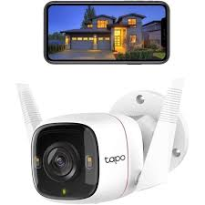

Tapo!
Din digitala säkerhet!



- Video i ultrahög definition: Varje bildruta spelas in i kristallklar 3MP-upplösning.
- Trådbunden eller trådlös anslutning: Anslut kameran till nätverket efter dina förutsättningar, antingen genom ethernet eller wifi.
- Avancerat mörkerseende: Ser upp till 30 m även i totalt mörker.
- Rörelsedetektor och notiser: Skickar notiser när kameran upptäcker rörelser.
- Ljud- och ljuslarm: Aktivera ljud- och ljuseffekter för att skrämma bort oönskade besökare.
- Tvåvägsljud: Kommunicera genom den inbyggda mikrofonen och högtalaren.
- Säker förvaring: Lokal lagring av microSD-kort på upp till 128 GB för smidig tillgång till alla inspelningar.
- Röstkontroll: Frigör händerna med röstkontroll som fungerar med Google Assistant och Amazon Alexa. (Google Assistant och Amazon Alexa är inte tillgängliga på alla språk eller i alla länder.) läs mer här!